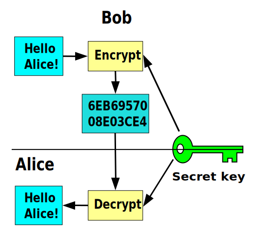
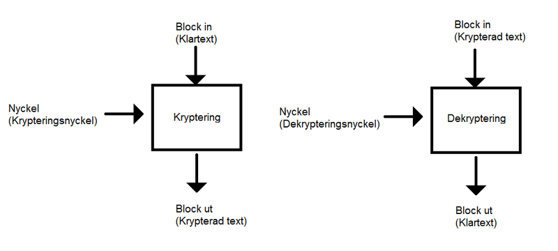
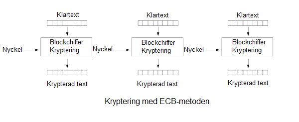
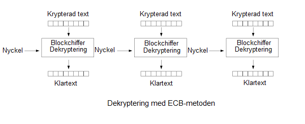
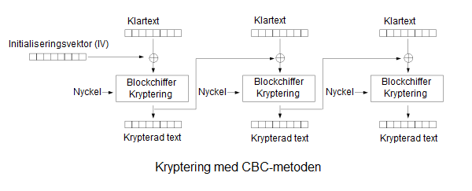
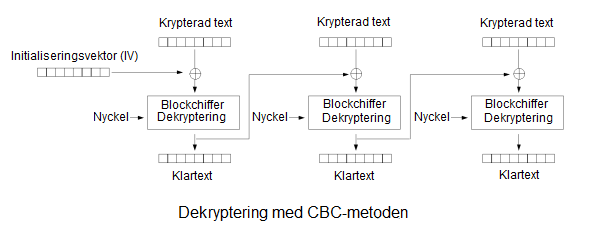

Kryptering
Svenka Muntlig presentation
Marko Hassinen och Eero Sääksvuori
*Du kan titta på presentationen med din maskin
Våra teman är kryptering:
- Vad är kryptering?
- Symmetrisk kryptering
- Asymmetrisk kryptering
Vad är kryptering?
Historiken
- Den första användningen av kryptering hittades i Egypten ca 1900 f.Kr
- Kryptering hade stor roll i andra världskriget.
- Enigma
Var använder vi
kryptering?
- Https-websidor
- Telefonlinjer
- Sparande av lösenord
symmetrisk kryptering
ECB Kryptering
 CBC Kryptering
 CFB Kryptering

Asymmetrisk kryptering
Till exempel RSA